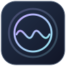
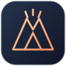
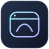

INTEGRATION CANDIDATE

UNITY Aurora
Local conversation, memory, voice and authorized tools with the Aurora Glass interface. Final desktop installation and validation are pending.
INDEPENDENT PROJECT · PRE-RELEASE
A Linux experience bringing local intelligence, thoughtful design and user control together.
Built in Brazil on Arch Linux and Wayland. No public ISO or universal compatibility claims.
01 / ECOSYSTEM
Each component has a different maturity level. A lab candidate is not a public release.
INTEGRATION CANDIDATE

Local conversation, memory, voice and authorized tools with the Aurora Glass interface. Final desktop installation and validation are pending.
LAB CANDIDATE

Authorized engineering tasks, tests, verifiable receipts and recovery. Continuous physical production is not yet validated.

Persistent memory and context retrieval; integrations evolving.

Scoped operational communication; integration under validation.

Experimental Android client, pairing and restricted access. Physical device validation pending.

Visual design direction for a coherent desktop, translucent surfaces and clear states.
02 / PERSONAL INTELLIGENCE
Capabilities in development, not a downloadable release: local streaming, recoverable conversations, cooperative cancellation, memory, documents, scoped desktop tools and session audio. Physical game-mode and resource behavior remain validation gates.
Conceptual architecture. User authorization and recovery remain essential.
03 / HARDWARE
Lite, Standard and Workstation profiles are proposed directions, not certified hardware requirements. Evaluate AMD, Intel, NVIDIA and CPU-only operation before making compatibility claims.
Desktop with optional local inference.
Adaptive Aurora experience.
Engineering and larger workloads subject to resource validation.
04 / ROADMAP
Installation to a virtual disk, ISO-free UEFI boot, desktop, network and CLI checks. Not physical hardware certification.
Authenticated installation, physical validation and recovery, then real authorized workloads.
Signing, clean upgrades and recovery before a supported public channel.
Hardware, licensing, documentation and security acceptance first. No release date announced.
The engineering repository remains private. Follow the public portfolio and reviewed milestones on GitHub.
Follow on GitHub ↗05 / FAQ
No. Alpha 0.3 is a private VM validation; there is no public ISO, release date or certified physical installer.
Hardware requirements are not certified. Optional inference and CPU-only profiles are proposed directions.
The design uses scoped tools and explicit authorization. Final validation is pending.
The engineering repository remains private. The website and portfolio are public; licensing and distribution availability remain subject to review.